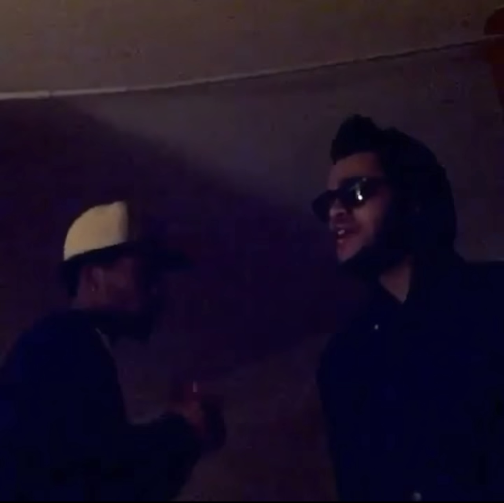
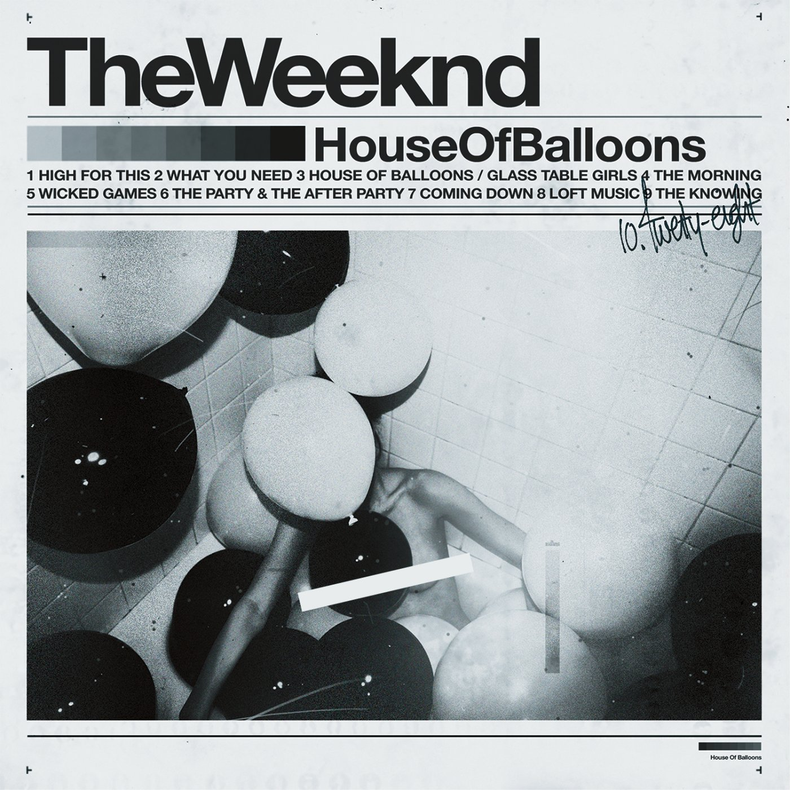
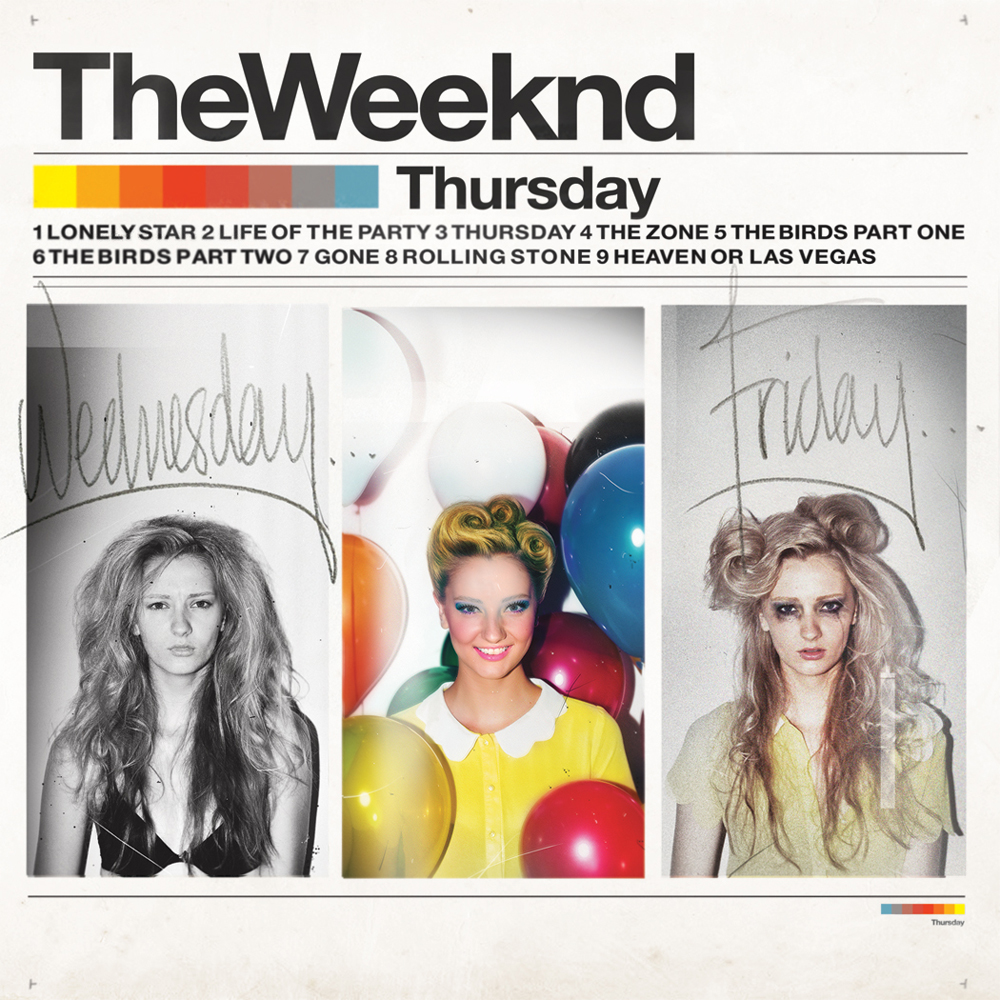
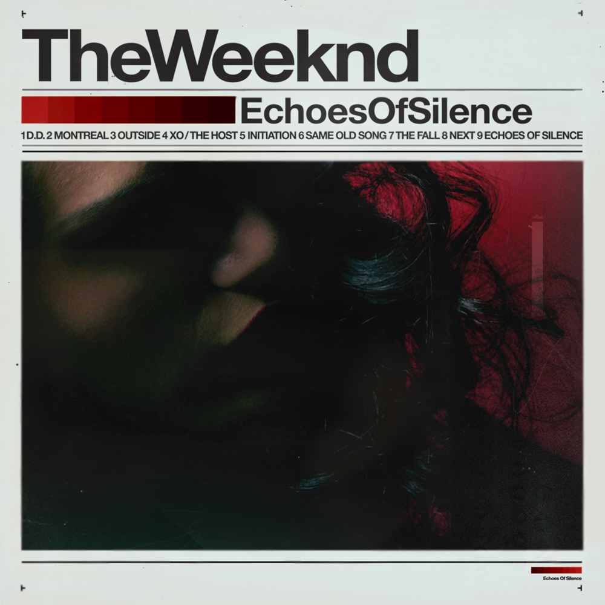
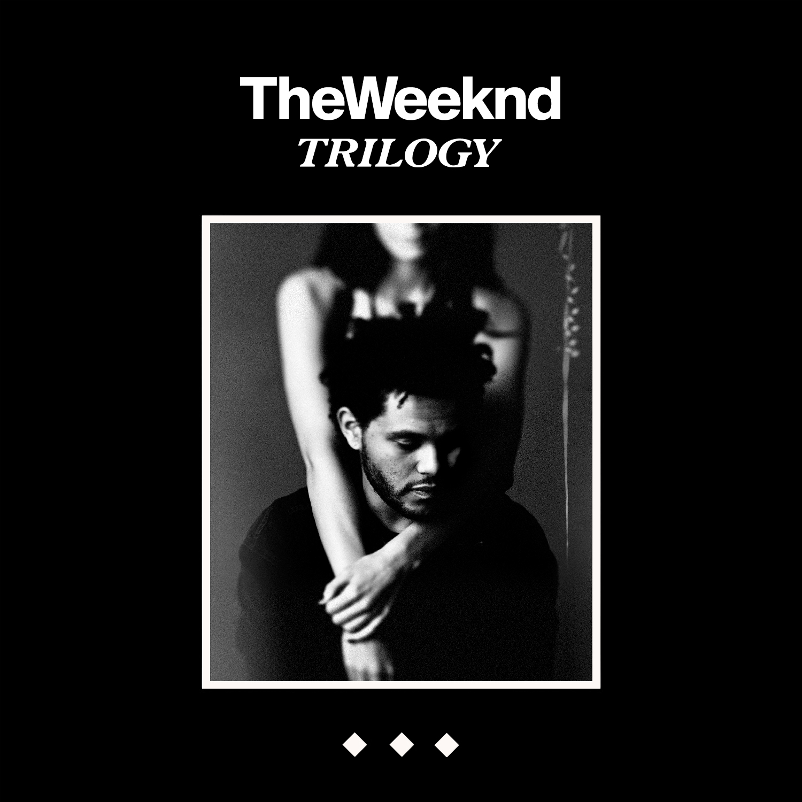

In 2009, a young Abel Tesfaye, known now as The Weeknd, began releasing music anonymously online. His career began in a completely different state to how it looks now: he had dropped out of high school one weekend and engaged in a hedonistic lifestyle characterized by rampant drug use, partying, and sexual pursuits. While many contemporary pop stars, including The Weeknd, have many hit songs described as “summer songs”, many of The Weeknd’s first attempts at songwriting (including those under names such as “The Noise” and “Kin Kane”, before finally adopting “The Weeknd”) could be described as winter anthems, containing lyrics about the cold hopelessness of empty, drug-addled sexual encounters, inevitable disappointment from his mother, and mutually toxic relationships. It seems miraculous that, despite forgoing the completion of a formal education and abandoning his home, Tesfaye was able to captivate the R&B scene so immediately.